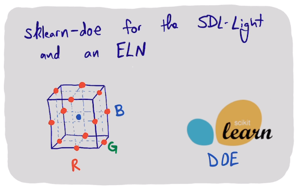

An sklearn-doe package with application to the SDL-Light
Table of Contents

In previous efforts (./doe.html and ./anova.html) we manually setup a design of experiments. Here I build on those works with a new sklearn-compatible library for a surface response design.
1. Setup the design
The main work is done by a pyDOE3 function to set up the design. This outputs a design in randomized order. This is the order you should run the experiments.
from pycse.sklearn.surface_response import SurfaceResponse
sr = SurfaceResponse(inputs=['R', 'G', 'B'],
outputs=['Ro', 'Go', 'Bo'],
bounds=[[25, 75],
[25, 75],
[25, 75]])
input = sr.design()
input
1.1. Run the experiments
Each row in that input array is an experiment we have to run. This is the measurement code.
import numpy as np
import matplotlib.pyplot as plt
from self_driving_lab_demo import (get_paho_client, mqtt_observe_sensor_data)
PICO_ID = 'test'
client = get_paho_client(f"sdl-demo/picow/{PICO_ID}/as7341/")
from pycse.hashcache import HashCache
@HashCache
def get_results(R, G, B, label=None):
return mqtt_observe_sensor_data(R, G, B, pico_id=PICO_ID, client=client)
def measure(R, G, B, label=None):
results = get_results(R, G, B, label)
return results['ch620'], results['ch510'], results['ch470']
I iterate on each row and make a "measurement". I then convert the results to a DataFrame. The output dataframe should use the column names.
import pandas as pd
from tqdm import tqdm
output = []
for i, RGB in tqdm(input.iterrows()):
result = measure(*RGB, f'jul-6-{i}')
output += [result]
output = sr.set_output(output)
output
1.2. Doing the analysis
We use the sklearn API to .fit the results.
sr.fit() print(sr.score()) sr.parity();
That looks pretty good.
The class provides a summary report.
print(sr.summary())
1.3. Making predictions
We can use the instance in sklearn predictions.
sr.predict(pd.DataFrame([[200, 200, 200]], columns=['R', 'G', 'B']),
return_std=True)
1.4. Using the model for optimization
Finally, we can use the model we fit in optimization. Here we look for the inputs that result in an output of (10000, 10000, 10000).
from scipy.optimize import minimize
def objective(RGB):
yp = sr.predict(pd.DataFrame([RGB], columns=['R', 'G', 'B']))
return np.sum((yp - 10000)**2)
sol = minimize(objective, [50, 50, 50])
sol.x.astype(int)
We can check the final answer too.
measure(*sol.x.astype(int))
That is pretty close.